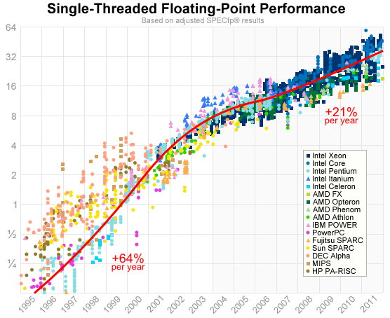
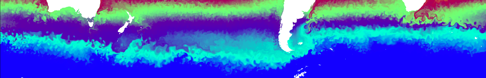
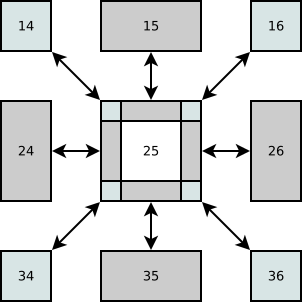
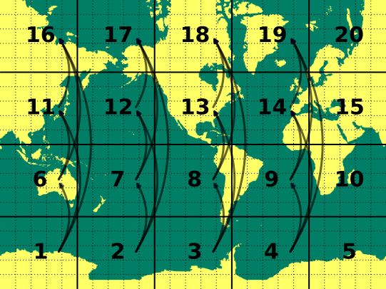

Limits of scalability of high-resolution ocean simulations at NCI
Marshall Ward
National Computational Infrastructure
Computational Performance
Peak performance follows a basic formula: $$R_\text{peak} = f \times N_\text{vec} \times N_\text{CPU}$$
- $f$ : CPU frequency (cycles per second)
- $N_\text{vec}$ : Instructions per cycle (vectorization)
- $N_\text{CPU}$ : Number of CPU cores
CPU Clock Speed

From CPU DB
(Andrew Danowitz, Kyle Kelley, James Mao, John P. Stevenson, and Mark Horowitz. 2012. CPU DB: recording microprocessor history. Commun. ACM 55, 4 (April 2012), 55-63.)
Single-threaded Performance

http://preshing.com/20120208/a-look-back-at-single-threaded-cpu-performance/
Supercomputer $R_\text{peak}$

Peak vs Maximum Performance
Peak vs Maximum performance
| Platform | $R_\text{peak}$ | $R_\text{max}$ | % usage |
|---|---|---|---|
| Tianhe-2 | 54902.4 | 33862.7 | 0.62 |
| Titan | 27112.5 | 17590.0 | 0.65 |
| Sequoia | 20132.7 | 17173.2 | 0.85 |
| K computer | 11208.4 | 10510.0 | 0.94 |
| Mira | 10066.3 | 8586.6 | 0.85 |
| Piz Daint | 7788.9 | 6271.0 | 0.81 |
| Stampede | 8520.1 | 5168.1 | 0.61 |
| JUQUEEN | 5872.0 | 5008.9 | 0.85 |
| Vulcan | 5033.2 | 4293.3 | 0.85 |
| (US computer) | 6131.8 | 3577.0 | 0.58 |
Computation vs Communication
- Computing speed has (probably) stopped
- Computing power is increasing, but slowly
- Cores are increasing, but are they communicating?
How do we reach $R_\text{peak}$?
NCI Platform: Raijin (雷神)
- 57,472 cores (3592 nodes, 16 core / node)
- Intel Xeon (Sandy Bridge), 3 GHz (turbo)
- 32+ GiB per node
- 56 Gb/s Infiniband network
- Two-level switched fabric fat tree
- $R_\text{max}$ = 0.978 PFlops (TOP500: #52)
MOM: The Modular Ocean Model
- Mixed finite difference / finite volume ocean model
- Consistently strong performance in CMIP studies
- FMS modelling framework
- Coupled to SIS: Sea Ice Simulator
0.25°-resolution experiment

- Based on GFDL's CM2.5
- CORE atmosphere forcing
- 1440 x 1080 x 50 grid points
- Tripolar grid
- 31 day run (1488 timestep)
- 5 day diagnostic output
- 72 sea ice steps per ocean step
More "eddy-permitting" than eddy-resolving
0.25° scaling
- Efficient scaling up to 960 CPUs
- Unused cores relieve some resource bottleneck
0.25° Communication

Submodel scaling
0.25° Performance
| CPUs | Years/day | Efficiency |
|---|---|---|
| 960 | 11 | 91% |
| 960 (+ 320) | 13 | 74% |
| 3840 | 27 | 42% |
| 3840 (+ 1280) | 29 | 33% |
(Efficiency is relative to 240 CPUs with hyperthreading)
Global 0.1° simulation
- GFDL CM 2.6 experiment
- CORE atmosphere forcing
- 3600 x 2700 x 50 grid points
- 10 day simulation
- Hyperthreading enabled
- Fully committed (16 processes per node)
- Output disabled
A global eddy resolving model
0.1° Scaling

- Strong performance up to 10k CPUs
- Ouput rate ~3 years/day
- TCP is not viable beyond 2500 CPUs
0.1° Communication

(10k communication inferred from scaling)
0.1° Submodel Scaling

Communication bottlenecks
- Timestep updates
- Global grid reconstruction
- Coupler flux exchange
- Barotropic streamfunction
Tile Decomposition

$N_\text{msg} \approx 8 N_x N_y$
Tile Boundary Caches (Halos)
Point-to-Point Messages
| Submodel | Isends |
|---|---|
| Sea Ice | 1512 |
| Ocean | 791 |
| Coupler | 57 |
Per timestep:
- Over 2300 messages (~300 fields) per CPU
- 24 million messages at 10k
Non-sequential scattering

- 1 2 7 8 13 14
- 3 4 5 9 10 11 15 16 17
- 6 12 18
- 19 20
- 21 22 23
- 24
- 25 26 31 32
- 27 28 29 33 34 35
- 30 36
- Breaking contiguity prevents efficient scatter/gathers
- $N_\text{msg} \approx N_x^2 N_y^2$ (point-to-point)
- Fails at 15k CPUs
Flux Exchange

- Ocean blocks
(Non-contiguous) - Coupler strips
(Not grid-aware)
- Coupler sends fractional cell overlap to every ocean tile!
- Even though most are zero!
- This one-time calculation fails past 1000 CPUs
Limits to Message Passing
Q: How do you tell someone that you don't need to send them a message?
A: You send them a message
Another $N_\text{msg} = N_x^2 N_y^2$ operation
Barotropic Streamfunction

Integration of $$\psi = \int_0^{L_y} u dy$$ for tile must collect values to the south
$N_\text{msg} \approx \frac{1}{2} N_x N_y^2$
Summary
- 0.25° (1000 CPU) global modelling is now routine
- Raijin is ready for 0.1° (10k CPU) modelling
- Communication is the simulation bottleneck
- Developers must address communication scaling